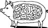

\1\2ğaç\3
Cüssesine kıyasla en büyük beyne sahip olan hayvan hangisidir?

a. Filler
b. Yunuslar
c. Karıncalar
d. İnsanlar
Karıncalar.
Karıncanın beyni vücudunun toplam ağırlığının yüzde 6’sını oluşturur. Aynı yüzdeyi insana da uygulayacak olsaydık kafamızın şu andakinden üç kat daha büyük olması gerekirdi ve eğer öyle olsaydı hepimiz Mekon ya da Morrissey gibi görünürdük.
Ortalama insan beyninin ağırlığı 1,6 kg’dır, bu da vücut ağırlığımızın yüzde 2’sinden biraz fazladır. Bir karıncanın beyni yaklaşık 0,3 mg’dır.
Karıncaların beyninde insan beynindeki nöronların sadece bir kısmı bulunsa da bir karınca kolonisi bir süper organizmadır. 40.000 karıncalık ortalama bir yuvada bir insanınkine eşit sayıda beyin hücresi vardır.
Karıncalar 130 milyon yıldır yaşıyor ve konuştuğumuz sırada yaklaşık 10.000 trilyon tanesi dolaşıp duruyor. Gezegenimizdeki karıncaların toplam kütlesi insanların toplam kütlesinden daha fazladır.
Karıncaların bilinen 8000 türü var. Dünyadaki toplam böceklerin yüzde birini karıncalar oluşturuyor. Dünyadaki toplam böcek sayısı bir kentilyon olarak hesaplanmıştır (yani 1.000.000.000.000.000.000 adet).
Karıncalar huzursuzluk yaratacak derecede insanlara benzerler. Mantar yetiştirirler, böcek olarak afid beslerler, ordularını savaşa sokarlar, düşmanlarını korkutmak ve bozguna uğratmak için kimyasal spreyler kullanırlar, esir alırlar, çocuk işçi kullanırlar, durmaksızın bilgi alışverişinde bulunurlar. Televizyon izlemek dışında her şeyi yaparlar.
LEWIS THOMAS
Karıncalar günde sadece birkaç dakika uyur ve su altında 19 gün yaşayabilirler. Ağaç karıncası kafası olmadan yirmi dört saat idare edebilir. Fakat yalnız bir karınca, kafası olsun olmasın, kolonisi dışında tek başına yaşayamaz.
Görünüşe göre, karıncaların yollarını bulmalarına yardımcı olan görsel bir hafızaları vardır. Geçtikleri yerlerin seri fotoğraflarını çekiyor gibidirler. Bilimciler karıncaların minnacık beyinlerinin bu kadar bilgiyi nasıl sakladığını anlayamıyor.
Karıncalar insanlardan daha güçlü değildir. Karıncalar kendi ağırlıklarının misliyle fazlasını kaldırabilir, ama bunun tek nedeni küçük olmalarıdır. Hayvan ne kadar küçük olursa vücut kütlesine bağlı olarak kasları da o kadar güçlü olur. Eğer insanlar karıncalarla aynı boyutta olsaydı onlar da o kadar güçlü olurdu.